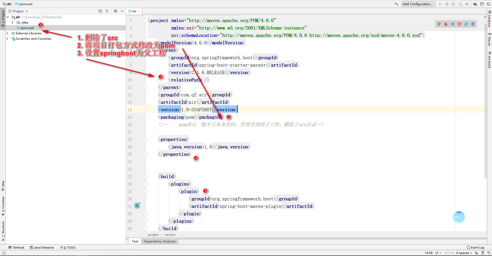
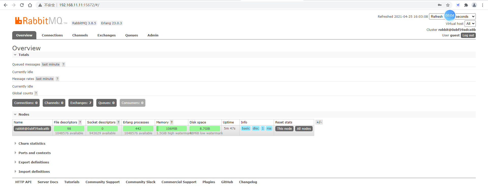
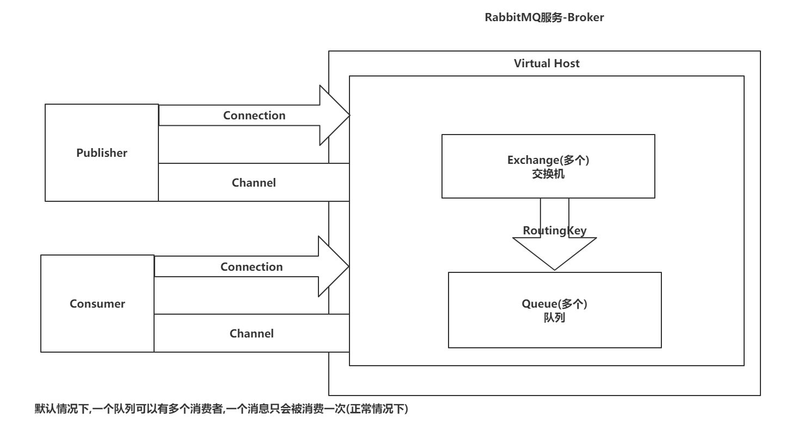
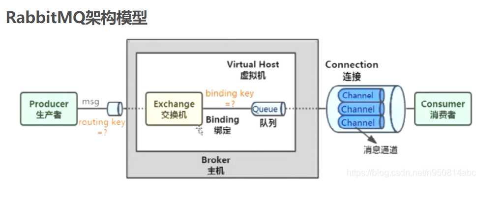
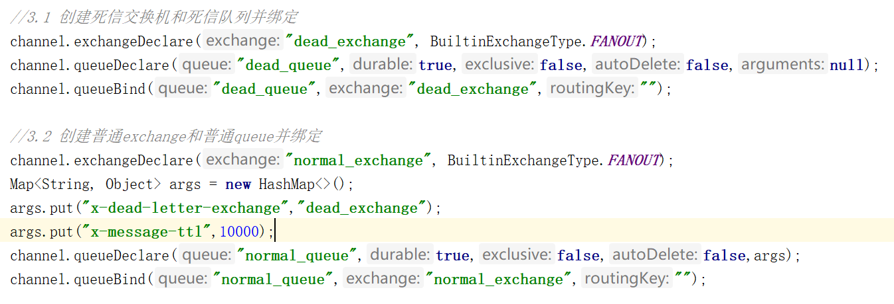

拆分项目（air）一、创建父工程（air-parent）二、创建子工程（air-core，air-search）三、拆解项目（copy）四、Tomcat相互交互RabbitMQ一、为什么学MQ二、安装RabbitMQ2.1 docker-compose.yml2.2 启动management插件三、RabbitMQ的架构四、RabbitMQ入门操作五、RabbitMQ的通讯方式六、SpringBoot整合RabbitMQ七、RabbitMQ的消息可靠性（避免消息丢失）一、RabbitMQ的通讯方式1.1 Work Queue1.2 Publish/Subscribe1.3 routing1.4 topic二、SpringBoot整合RabbitMQ2.1 入门操作2.2 手动ack三、RabbitMQ的消息可靠性3.1 Confirm机制3.2 Return机制3.3 消息的持久化四、死信队列&延迟队列 4.1 什么是死信队列4.2 死信队列的实现4.3 死信队列有点小问题,需要使用RabbitMQ的延迟交换机来解决!
daocloud.io/library/rabbitmq:3.8.5
| 创建父工程 |
|---|
|  |
创建时，选中air父工程右键new -> module
- air-core：负责正常和客户端交互（不与Elasticsearch直接交互）
- air-search：负责和Elasticsearch进行交互（不与客户端直接交互）
将直接完成的air工程全部内容复制air-core中
在air-search模块中完成和Elasticsearch的交互
x("/air/list")public List<Map<String,Object>> list( Map map) throws IOException {// 返回查询到的具体数据return data;}("/air/count")public Long count( Map map) throws IOException {// 返回查询到的数据条数return count;}("/air/add")public void add( Map map){// 添加数据到ES的air索引}("/air/update")public void update( Map map){// 修改ES中的air索引数据}("/air/del")public void del( Map map){// 根据id删除air索引的数据}("/air/findEchartsData")public List<Map<String, Object>> findEchartsData(){// 查询统计的信息}完成后，用postman测试一波，保证可以正常拿到数据
通过Java代码发送HTTP请求（air-core 发送 air-search）
模板代码：
- 准备请求参数（准备了request body中的数据）
- 准备请求头（APPLICATION_JSON_UTF8）
- 将请求参数和请求头封装到一起（HttpEntity）
- 通过由Spring容器管理的RestTemplate.postForObject将请求发送到air-search
其他问题：
- 将返回的JSON字符串，反序列化List
现存问题：
- 服务与服务之间的耦合性太高了，虽然体现出了高内聚，但是也出现高耦合的问题
- 服务与服务之间采用的是HTTP方式通讯，是同步操作，造成一个完整的业务需要很长时间。
- 当某一个服务出现了并发的情况，可能会导致其他服务也出现并发问题。
采用MQ来解决上述问题：
- 解耦：在服务与服务之间，采用MQ进行通讯，从而实现解耦
- 异步：让服务生产者只需要关注减消息发送给MQ即可，至于消费者何时消费不管。
- 削峰：避免服务出现并发的请款，可以将消息暂时存放在MQ中，慢慢的消费。
市面上有很多MQ：
- RabbitMQ：Eerlang语言编写，性能最高的，稳定性不错。
- RocketMQ：Java编写的，阿里巴巴开源的，分布式事务的处理上，RocketMQ是最好的。
- Kafka：Scala编写的，高吞吐量，本身就是应对大数据方向的。
xxxxxxxxxxversion"3.1"services rabbitmq imagedaocloud.io/library/rabbitmq3.8.5 restartalways container_namerabbitmq ports5672:567215672:15672 volumes./data:/var/lib/rabbitmq
进入到RabbitMQ的容器内部。
跳转到/opt/rabbitmq/plugins，找到rabbitmq_management
跳转到/opt/rabbitmq/sbin，执行
xxxxxxxxxx./rabbitmq-plugins enable rabbitmq_management回到浏览器，访问15672端口：默认用户名和密码都是guest
图形化界面 
| RabbitMQ架构 |
|---|
|  |
|  |
创建项目
导入依赖
xxxxxxxxxx<dependencies><dependency><groupId>com.rabbitmq</groupId><artifactId>amqp-client</artifactId><version>5.7.3</version></dependency><dependency><groupId>junit</groupId><artifactId>junit</artifactId><version>4.12</version></dependency></dependencies>连接RabbitMQ
xxxxxxxxxxpublic class ConnUtil {public static Connection getConnection(){//1. 创建连接工厂ConnectionFactory factory = new ConnectionFactory();//2. 设置5个信息factory.setHost("192.168.11.11");factory.setPort(5672);factory.setUsername("2004");factory.setPassword("2004");factory.setVirtualHost("2004");//3. 从工厂获取连接对象Connection connection = null;try {connection = factory.newConnection();} catch (Exception e) {e.printStackTrace();}//4. 返回return connection;}}
创建生产者
xxxxxxxxxxpublic void publish() throws Exception {//1. 获取连接对象Connection connection = ConnUtil.getConnection();//2. 创建Channel通道Channel channel = connection.createChannel();xxxxxxxxxx//3. 创建队列(hello-queue)//3.1 queue：队列名称//3.2 durable： 队列是否持久化（重启后再创建）//3.3 exclusive： 是否排外（当前队列只能有一个消费者）//3.4 autoDelete：如果没有消费者队列自动删除//3.5 arguments：队列的其他参数channel.queueDeclare("hello-queue",true,false,false,null);//4. 发送消息到默认的交换机 - hello-queueString msg = "Hello World!";//4.1 exchange： 交换机名称，默认的交换机叫 空串//4.2 routingKey： 交换机和队列绑定的规则，现在使用的是默认交换机，默认交换机是direct，direct默认就是routingKey叫什么，就把消息路由到指定队列//4.3 props： 消息其他的属性//4.4 body： 具体消息channel.basicPublish("","hello-queue",null,msg.getBytes());System.out.println("消息发送出去啦！！！");}
xxxxxxxxxx- 创建消费者```java@Testpublic void consume() throws IOException {//1. 获取连接对象Connection connection = ConnUtil.getConnection();//2. 创建Channel通道Channel channel = connection.createChannel();//3. 创建队列channel.queueDeclare("hello-queue",true,false,false,null);//4. 监听队列中的消息 hello-queueDefaultConsumer consumer = new DefaultConsumer(channel){@Overridepublic void handleDelivery(String consumerTag, Envelope envelope, AMQP.BasicProperties properties, byte[] body) throws IOException {// 当消费者监听到队列中有消息时，会执行handleDelivery方法，处理消息System.out.println("消费者获取到消息啦:" + new String(body,"UTF-8"));}};channel.basicConsume("hello-queue",true,consumer);System.out.println("开始监听hello-queue");System.in.read();}
###
xxxxxxxxxx# RabbitMQ如何避免消息丢失# RabbitMQ如何避免消息的重复消费# RabbitMQ如何解决消息堆积问题
一个队列被多个消费者消费：
默认情况下，RabbitMQ会平均的将消息分发给不同的消费者，不管消费者的消费能力
让消费者充分发挥消费能力：
- 手动ack：将comsume方法的autoAck设置为false，再消费消息后，执行channel.basicAck(标识，批量)
- 设置Qos：指定消费者每次拉取消息的数量
自行创建交换机和队列进行绑定
- 采用FANOUT类型的exchange，不需要routingKey，直接和queue绑定到一起，一个exchange可以绑定多个queue
自行创建交换机和队列进行绑定
- 采用DIRECT类型的exchange，需要routingKey，根据一个RoutingKey的值，将exchange和queue绑定
- 当生产者发送消息到exchange时，会携带一个RoutingKey，根据消息携带的RoutingKey来决定exchange需要将消息路由到哪些queue中
自行创建交换机和队列进行绑定
- 采用TOPICS类型的exchange，通过routingkey绑定queue，RoutingKey要以 xxx.yyy.zzz... 的形式去编写，在绑定交换机和队列时，可以使用*代表占位符，使用#代表通配符
- 当发送消息时，发送消息携带的routingKey会去匹配绑定queue时，指定的RoutingKey
创建项目（SpringBoot）…………
导入依赖
xxxxxxxxxx<dependency><groupId>org.springframework.boot</groupId><artifactId>spring-boot-starter-amqp</artifactId></dependency>编写配置文件
xxxxxxxxxxspringrabbitmqhost192.168.11.11port5672username2004password2004virtual-host2004创建exchange，queue，binding
xxxxxxxxxxpublic class RabbitMQConfig {public Exchange exchange(){return ExchangeBuilder.topicExchange("boot-exchange").build();}public Queue queue(){return QueueBuilder.durable("boot-queue").build();}public Binding binding(Exchange exchange,Queue queue){return BindingBuilder.bind(queue).to(exchange).with("big.#").noargs();}}声名消费者监听队列消息
xxxxxxxxxxpublic class BootQueueListener {(queues = {"boot-queue"})public void consume(String msg){System.out.println("获取到消息：" + msg);}}发送消息到交换机
xxxxxxxxxxpublic class SendController {private RabbitTemplate rabbitTemplate;("/send/{message}")public String send( String message){rabbitTemplate.convertAndSend("boot-exchange","big.white.dog",message);return "OK!";}}
为了保证手动ack，需要执行下述流程：
修改配置文件，将自动ack设置为手动ack
xxxxxxxxxxspringrabbitmqlistenersimpleacknowledge-modemanual # 手动ack在消费者端的方法中添加额外的两个参数，Channel，Message
xxxxxxxxxx(queues = {"boot-queue"})public void consume(String msg, Channel channel, Message message) {...}在方法体中的最后位置添加手动ack操作
xxxxxxxxxx(queues = {"boot-queue"})public void consume(String msg, Channel channel, Message message) throws IOException {// 处理消息的业务代码System.out.println("获取到消息：" + msg);// 手动ackchannel.basicAck(message.getMessageProperties().getDeliveryTag(),false);}
确保生产者发送的消息一定可以送达到Exchange
- Confirm机制确保
确保Exchange中的消息可以路由的Queue
- Return机制确保
确保Queue可以将消息持久化到本地
- 发送消息时，携带的参数，指定消息为持久化
确保Queue可以正常的被消费者消费掉
- 手动ack
在发送消息前，先开启confirm机制
xxxxxxxxxxchannel.confirmSelect();confirm机制的确认
返回boolean类型的确认
（一般不用）xxxxxxxxxxif (channel.waitForConfirms()) { …… }出现问题会抛出异常的确认
（一般不用）xxxxxxxxxx// 需要等待try {channel.waitForConfirmsOrDie();} catch (IOException e) {e.printStackTrace();}异步回调的方式
（推荐使用）xxxxxxxxxx// 添加了回调方法channel.addConfirmListener(new ConfirmListener() {public void handleAck(long deliveryTag, boolean multiple) throws IOException {System.out.println("消息已经送达到交换机");}public void handleNack(long deliveryTag, boolean multiple) throws IOException {System.out.println("消息丢了,没送到交换机");}});
Exchange不会持久化消息，通过Return机制确保消息已经从Exchange路由到了Queue
需要给Channel设置一个Return的回调
xxxxxxxxxxchannel.addReturnListener(new ReturnListener() {public void handleReturn(int replyCode, String replyText, String exchange, String routingKey, AMQP.BasicProperties properties, byte[] body) throws IOException {System.out.println("消息没有路由到队列");}});开启Return回调机制，在发送消息时，设置参数mandatory设置为true
xxxxxxxxxx// void basicPublish(String exchange, String routingKey, boolean mandatory, BasicProperties props, byte[] body)channel.basicPublish("pubsub-exchange", "",true, null, msg.getBytes());
在消息送达到队列之后，保证队列可以将消息持久化，并且重启不会丢失
给props设置DeliveryMode为2，代表消息需要持久化
xxxxxxxxxx// deliveryMode设置为2，代表队列中的消息需要持久化AMQP.BasicProperties props = new AMQP.BasicProperties().builder().deliveryMode(2).build();String msg = "publish/subscribe!!";channel.basicPublish("pubsub-exchange", "",true, props, msg.getBytes());
“死信”的产生大概有三种情况
- 队列中的消息存满了，生产者又发送过来一条消息，这个消息会变成“死信”
- 消费者在消费完毕消息后，没有正常的ack，而是reject/nack，这个消息会变成“死信”
- 当队列中的消息达到生存时间后，这个消息会变成“死信”
如果出现了“死信”，查看当前队列，有没有绑定死信交换机（exchange），和死信路由（routingKey），只要绑定了死信交换机，将“死信”从当前队列路由到死信交换机，死信交换机会绑定着队列，这个队列称之为死信队列
死信队列的应用场景：
- 进一步的避免消息丢失。
- 可以处理一些异常的操作，将出现问题的消息拒绝，路由到死信队列单独处理。
- 死信队列可以实现延迟操作效果
给普通队列绑定死信交换机
配置方式 